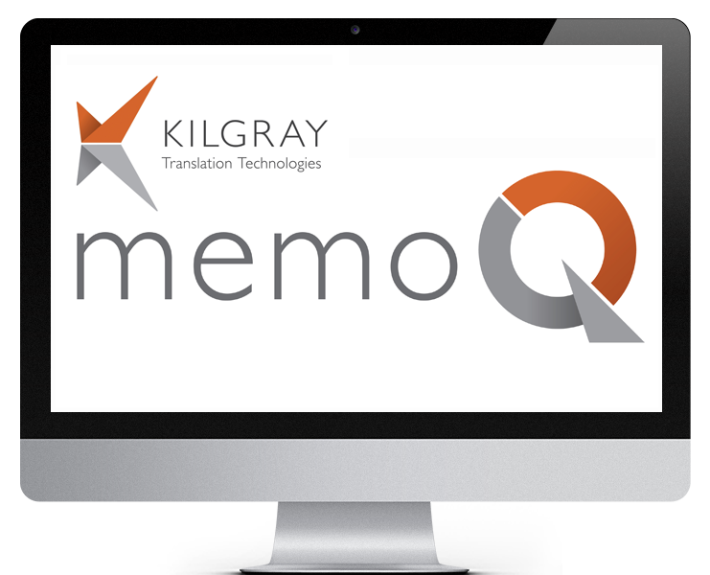

Eddigi munkáink
Profizmus, átláthatóság, folyamatos üzleti érték szállítás és szoros együttműködés.
Fordítástámogatás
Kilgray Kft.
- Több komponensből álló, irodai, back-office és webes elemeket egyaránt magába foglaló rendszer
- Támogatja a fordítási projektek szervezését, a projekten belüli csoportmunkát
- Segítségével az egyes fordítók hatékonyan tudnak minőségileg ellenőrzött munkát végezni.
- Több komponensből álló, irodai, back-office és webes elemeket egyaránt magába foglaló rendszer


Diagnosztikai felület
Corrocont Group
- web alapú megoldást készítettünk számukra, amely a cég katódos diagnosztikai eredményeit egy interaktív grafikus felületen képes megjeleníteni a CORROCONT ügyfelei számára
- Az alkalmazás alapvető célja a katódos védelem állapotához kapcsolódó adatsorok vizualizációja olyan formában, hogy segítségével könnyen és egyértelműen azonosíthatóak legyenek a korrózióvédelmi szempontból kritikus részek, valamint azok térbeli elhelyezkedése.
- CORROCONT Group az egyik piacvezető cég a magyar és nemzetközi korrózió védelemi iparágban
- Fő tevékenységi körük az olaj- és gázipari létesítmények fém felületeinek katódos védelme és diagnosztikai vizsgálata.
Szélerőmű-farm szimulációs környezet
ECN, Energy research Centre of the Netherlands
- egy változó, adaptív lépésközzel működő, időtartománybeli szimulációs környezet
- lehetővé teszi egy szélerőmű-farm telepítése, működtetése és karbantartása során zajló különféle munkafolyamatok nyomon követését
- a különféle időjárási viszonyok mellett várható költségek, a megtermelt energia, valamint a felmerülő erőforrás-igény nagyságának és időbeli eloszlásának becslését
- lehetőséget nyújt különféle erőforrás-allokációs és időzítési algoritmusok kipróbálására és azok hatásának vizsgálatára, így lehetővé teszi a működési költségek, illetve a megtermelt energiamennyiség optimális arányának beállítását.


Szélerőmű-farm karbantartás optimalizálás
Netherlands Organisation for Applied Scientific Research
- szélerőmű farmok napi karbantartását segítő szimulációs eszköz
- különböző hajók és karbantartó csapatok napi munkájának követésére és kiértékelésére van lehetőség
- elkészült eszköz a napi feladatok listája alapján az aktuális időjárási körülmények figyelembevételével számítja ki az eredményeket, és azokat numerikus teljesítmény indexek és látványos diagramok formájában jeleníti meg.
Tolmácsokat segítő alkalmazás
A LEX EXPERT Műszaki és Fordító Iroda
- GINOP-2.1.7 pályázat keretében
- Az alkalmazás hangbementen keresztül érkező szöveget beszédfelismerő modullal szöveggé alakítja, majd egy CAT alkalmazásnak továbbítja,
- szolgáltatva valós időben terminológia és fordítási találatokat, valamint számfelismerést a szinkrontolmácsok számára.


Gyártási és minőségbiztosítása rendszer
Low8
- kézzel bevitt, illetve a gépsorokhoz kapcsolódó PLCk-ből kinyert adatokat gyűjti össze és rendszerezi.
- tervezésnél fontos szempont volt az egyes végtermékek elkészítéséhez használt alkatrészek pontos nyomonkövethetőségének biztosítása,
- illetve hogy az elkészült rendszer jól alkalmazkodjon a termelési munkafolyamatokban, valamint a használt gépsorok konfigurációjában bekövetkező változásokhoz.
Augmented Reality
Exliteron
- kis- és közepes méretű gyárak robotizálási folyamatának hatékonyságának javítását
- projektet részben egy, az Európai Unió által támogatott, start-up program finanszírozza
- Munkánkal és szaktudásunkkal minden rendszerösszetevő fejlesztéséhez hozzájárulunk, melyek a tablet alkalmazásoktól, a vegyes valóságon át a videofelvételek és az ipari robotok programjainak feldolgozását végző szerver funkcionalitásig tartó széles palettán helyezkednek el.